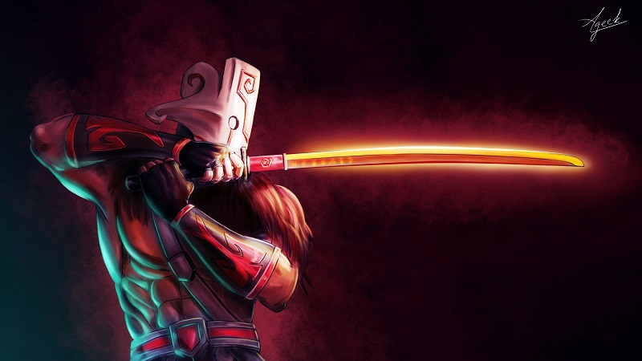
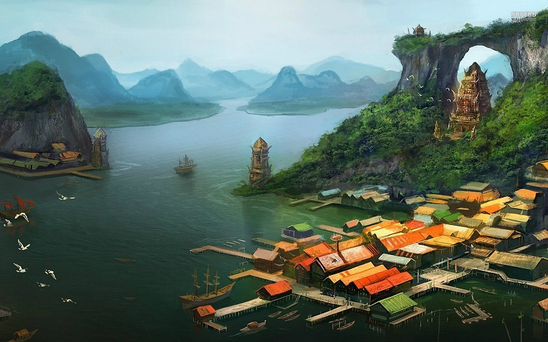
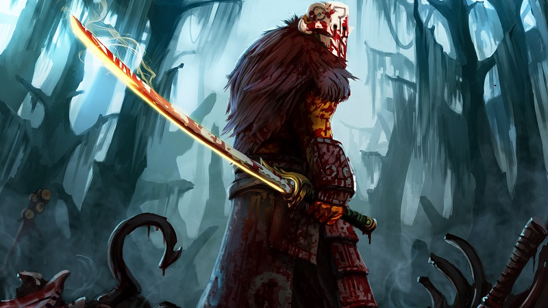
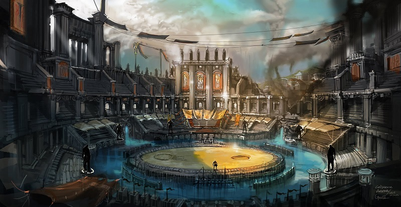

Dota 2 Lore

Yurnero, Sang Juggernaut dengan Masa Lalu yang sangat Tragis
Sept 14, 2017 views : 3,487,489 Juggernaut mungkin adalah salah satu hero paling dikenal dalam Dota 2, dan banyak orang juga sangat menyukainya. Dia adalah hero yang cocok dimainkan dalam posisi apapun, dan mudah untuk dipelajari oleh seorang pemula. Namun, apa yang kamu ketahui tentang masa lalu dari hero ini?

Sama dengan Kunkka dan Tresdin, Yurnero adalah salah satu hero dengan masa lalu yang paling tragis sepanjang sejarah Dota 2. Namun, ternyata di balik topeng yang dia gunakan, Juggernaut menyimpan sebuah cerita yang pasti bisa membuat kamu meneteskan air mata! Ingin tahu lebih banyak? Yuk kita simak lore dari hero yang satu ini. Ini adalah sebuah cerita tentang seorang pengembara bernama Yurnero yang selalu menggunakan topeng dan pedang misterius. Walaupun tidak ada yang tahu darimana dia berasal atau seperti apa wajah dibalik topeng tersebut, kebaikan hatinya telah dikenal oleh semua orang. Beberapa yang sempat berpapasan dengan dirinya bahkan selalu mencoba untuk berbicara dengannya untuk memahami apa alasan dibalik perjalanannya; untungnya, Yurnero selalu dengan senang hati menceritakan kisah masa lalunya.

Sang pahlawan tersebut berasal dari sebuah kepulauan bernama Isle of Mask, sebuah tempat yang dikenal karena keterampilan para pembuat pedangnya dan kepercayaan mereka terhadap entitas misterius bernama Faceless Ones. Saat menyebutkan nama dari tempat tersebut, tidak ada jarang Yurnero melihat wajah yang kebingungan karena tidak pernah mendengar nama Isle of Mask, namun, Yurnero selalu membalasnya dengan tawa kecil sebelum kembali melanjutkan ceritanya. Kepulauan tersebut memiliki sebuah tradisi dimana para penduduknya diwajibkan mengenakan sebuah topeng khusus untuk selalu menutupi wajahnya, bahkan setelah mereka lahir. Hal ini membuat banyak orang berpendapat bahwa Isle of Mask mungkin adalah sebuah tempat yang dikutuk oleh para Dewa, sehingga wajah para penduduknya tidak lagi menyerupai manusia. Namun, ada juga yang mengatakan bahwa topeng adalah kunci untuk membuka kekuatan spiritual dalam tubuh mereka untuk membuat tubuhnya menjadi jauh lebih kuat dan lincah.

Masing-masing pulau yang berada dalam Isle of Mask memiliki topeng yang berbeda-beda, dan setiap beberapa tahun para penduduk dari seluruh kepulauan tersebut berkumpul untuk menyaksikan sebuah turnamen. Menurut Yurnero, acara tersebut dilakukan untuk mencari tahu siapakah orang terkuat dalam Isle of Mask, dan para petarung dalam turnamen tersebut diberi julukan “Juggernaut.” Namun, dirinya juga menambahkan bahwa pemenang dari acara tersebut tidak hanya berhasil membuktikan kekuatannya di hadapan para penontonnya, melainkan juga para Dewa. Selama masa kecilnya, Yurnero sangat mendambakan turnamen tersebut; dia selalu membicarakan bersama teman-temannya tentang siapa pahlawan Juggernaut favorit mereka, dan bahkan berlatih untuk mengikuti setiap gerakannya. Walaupun usianya pada saat itu masih sangat muda, Yurnero telah berhasil membuktikan dirinya sebagai salah satu petarung paling kuat dari pulaunya, namun, perjalannya menjadi seorang Juggernaut harus terhenti sejenak.

Disaat muncul kesempatan baginya untuk meneruskan latihannya, ibu Yurnero terkena sebuah penyakit misterius. Semenjak dirinya kecil, Yurnero hanya tinggal berdua dengan ibunya setelah ayahnya terbunuh sebelum dirinya lahir. Rasa cinta Yurnero terhadap ibunya adalah alasan yang cukup untuk menghentikan latihannya. Namun, kondisi dari ibunya justru semakin memburuk. Walaupun para penduduk Isle of Mask memiliki sebuah ritual yang dapat menyembuhkan berbagai luka dan penyakit, tidak ada satupun yang dapat menyembuhkan penyakit ibunya sehingga Yurnero memutuskan untuk berhadapan langsung dengan Faceless Ones dan meminta bantuan dari seorang Dewa. Satu-satunya cara agar dia dapat berhadapan dengan Faceless Ones adalah dengan menjadi juara dari turnamen, namun, umurnya yang masih terbilang muda telah melarang Yurnero untuk mengikuti acara tersebut. Bagi para penduduk Isle of Mask, peraturan adalah suatu hal yang sangat sakral, sehingga tidak ada satupun orang yang berani melanggar hal tersebut. Namun, ini adalah satu-satunya harapan bagi dirinya, dan Yurnero tahu bahwa dia harus melanggar peraturan tersebut.